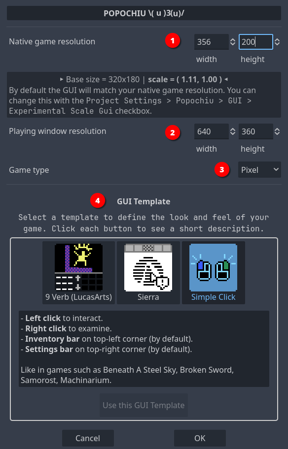
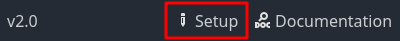

Game setup
When you first start your project, you are greeted with the Setup popup, where you can define the base parameters of your game.

Using this window will take care of configuring Godot project with a coherent preset of parameters so that your game looks good in all situations.
Also, it will preconfigure the Game User Interface (GUI) of your choice, so that you don't have to.
Set game resolution
The Native game resolution (1) is the actual resolution of your assets (i.e. background). This resolution will be scaled up or down to match the actual display resolution (see below). Usually, you want to set this to the size of a full-game background that fills the entire "screen".
For example, if you plan to create a retro-vibes pixel-art adventure game like the early ones by Sierra or LucasArts, you may want to keep this resolution down to 320x200, which was the native resolution of VGA displays back then.
If you want to create a high-res game like the modern Deponia series, with beautifully painted art, you may want to bring this up to 1920x1080, which is a modern Full-HD display resolution.
Tip
If you plan to develop a pixel-art game for widescreen displays, these are common resolutions that can work on a modern PC:
320x180: vertically very small, good to emulate pioneering 80s games like Sierra's King's Quest or similar.356x200: more vertical space, this is a "widescreen" version of the 320x200 that games like The Secret of Monkey Island or King's Quest V had on an IBM PC or Amiga, back then.384x216: there were no games back then featuring this resolution, but it can be used if you want to have a bit more vertical space for higher sprites or to accommodate a bulky interface like the 9-verbs one, without ruining the retro-vibe.
Some prefer not to play adventure games in full-screen so, once you've set the native resolution for your game, you may use the Playing window resolution (2) values to set the size your game will have when played in windowed mode. For low-res games, you want to provide a larger window than the native resolution, or on most modern displays, it will be very tiny.
Note
The provided default is a good fit for most Full-HD displays, and the player will be able to resize the window anyway. Probably it's worth adjusting the window size only if you know your game will be played in specific contexts.
Finally, the Game type (3) select box will set a bunch of project settings that are better kept coherent, from sprite importing to scaling algorithms, etc. The options are:
- Custom: This does nothing, leaving all the settings to the developer. 2D: Choose this for high-res games, that may benefit from anti-aliasing when scaled up or down. Pixel: Choose this for low-res and pixel-art games, so that your graphics remain crisp when scaled up or down.
Under the hood
For the more technical readers, what the Game type options do is preconfigure the Stretch mode to canvas_item and Stretch aspect to keep for you. The Pixel mode also sets textures using the Nearest filter, so that no anti-alias or blurring happens when the game is scaled.
Note
Nowadays there are so many different display aspect ratios, that making assumptions about how your game will be played is futile. Nonetheless, the vast majority of devices out there (mobile or PCs) have displays close enough to 16:9 that you will probably end up keeping this ratio into consideration. That's the reason why Popochiu default values are set to 320x180: it is an old-style resolution, with the aspect ratio of a modern display.
Select game GUI
Since version 2.0, Popochiu comes with a preset of different GUI templates, and in the next version, it will provide a set of features to create your own custom one.
Preset GUI templates will contain all the assets and logic thay you need to mimic some of the most common game interfaces of the Adventure genre.
In the GUI Template (4) section of the Setup popup, you can click on a GUI icon to select which template to apply:
- 9 Verbs: inspired by the original SCUMM interface, first seen in Maniac Mansion, but getting its final form with Monkey Island 2: LeChuck's Revenge, and used by many games up to the recent Thimbleweed Park.
- Sierra: inspired by the early 90s SCI interface, common to King's Quest and Space Quest series. It took many forms, always specific to Sierra games. Very useful for projects that want to bring back that historical interaction patterns.
- SimpleClick: the most basic and straightforward interface for an Adventure Game, common to many modern titles like Deponia - left-click to walk and interact, right-click to examine. This version is influenced by early PowerHoof productions.
Warning
You can change your mind and apply a different template later during the development of your game, but doing this will replace your GUI (and all the custom logic or graphics) with a new template.
Also, keep in mind that some GUIs will take up space on the screen (like the 9 Verbs one), so please, consider this when designing your backgrounds.
Note
You can go back and review your game setup choices at any moment, by clicking the "Setup" button at the bottom of the Popochiu Main Dock.
